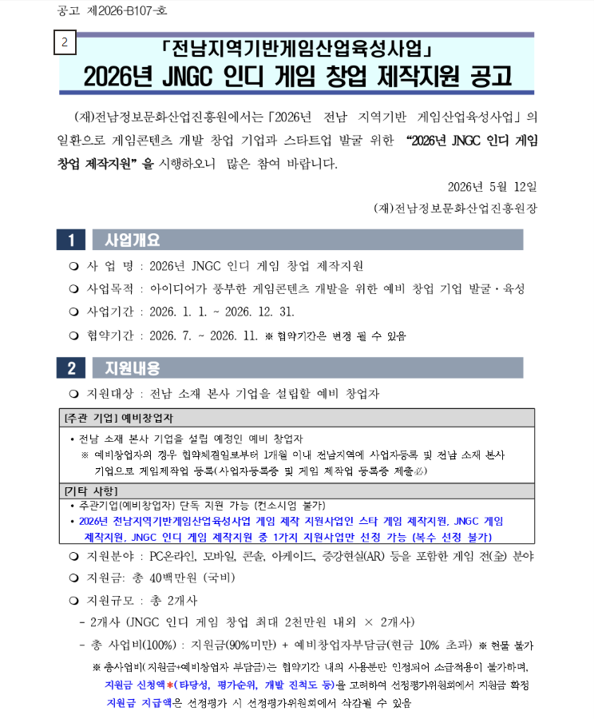

Fight!
이전
다음
🎙️ AI 주파수 대조 매핑 대시보드
트리거 범위 (노란색)
감정 범위 (파란색)
🔄 아예 처음부터 다시하기
[표준 주파수 대조군] TRACK 01
"나는
오늘도
화가 난다
"
녹음
종료
재녹음
변수 분석군 TRACK 02
"나는
나땜에
화가 난다
"
녹음
종료
재녹음
💡 트리거 일치율 우위
=
🔥 감정 일치율 우위
=
변수 분석군 TRACK 03
"나는
너땜에
화가 난다
"
녹음
종료
재녹음
🎯 실시간 주파수 패턴 매핑 피드백
선택 영역 분석 완료. 대시보드의 두 가변 주파수 파형 배열 간 일치도 튜닝 매핑이 실시간 적용되었습니다.
이전
다음

이전